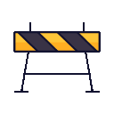

{{ csTitle }}
The full case study for this project isn’t written up yet.
The full case study for this project isn’t written up yet.
Letting every client run cases their own way
Disclaimer: The interfaces presented in this case study are representative mockups and may not exactly reflect the production application. Certain elements have been modified or recreated to comply with confidentiality and NDA obligations.
I led product and design on Kriyam Workspace, a feature on Kriyam's field investigation platform that lets clients reshape the app around how they already work, instead of learning to work the way the app expects. Kriyam runs three different kinds of investigations — Pre & Post, Claims and Financial Services. All three come down to the same basic act: send someone out to verify something on the ground. Almost nothing else about them lines up. Workspace exists to close that gap.

It usually showed up in the first ten minutes of a demo. Someone on the client's side would land on a column labelled "Case ID" and pause — not confused, exactly, just unconvinced. Their team had been calling it something else for years, long before Kriyam existed. And Case ID was the easy one. The same thing happened with the second person tied to a case, with the individual checks that made up a bigger investigation, with half the vocabulary on the screen.
That's the part that's easy to miss unless you've sat through it yourself — this was never really a complaint about labels. Pre & Post, Claims, and Financial Services aren't the same workflow in different outfits. They run under different logic, answer to different people, and care about entirely different fields. But for a long time, Kriyam pushed all three through one fixed case list — same columns, same section names, same structure, no matter who you were or which format you were running. Every client had to learn Kriyam's language before they could get on with speaking their own.
You could see the cost in small, recurring moments rather than one dramatic failure. A new hire taking a little longer than they should to feel at home in the tool. Support fielding the same "can you just rename this for us" request every few weeks. A client spending their first month on the platform translating our screen into their own paperwork instead of just using it. None of it looked like a crisis. All of it added up.
We didn't need a formal study to see this one — it was in every client conversation we had, all the time. And it wasn't limited to what showed up on screen, either. This was baked into how teams already talked to each other on the ground, on calls, in their own internal paperwork, long before Kriyam ever entered the picture.
The case number was the easiest one to spot. Customer ID to one client, Case ID to another, Investigation ID to a third — the same field wearing three different names depending on whose office you walked into.
The second name on a case wasn't safe either. Co-applicant to one client, Joint applicant to another — same person, different word, depending entirely on whose paperwork you were reading.
Even the smallest unit of work had multiple names floating around. Subcase to one, verification to another, a point to a third — three words for the exact same piece of work.
None of these clients were wrong. Each had simply settled on their own vocabulary years before we showed up, and every time they used Kriyam, we were quietly asking them to unlearn it.
So instead of asking clients to adopt Kriyam's language, we let them keep their own. Workspace gives every client a version of Kriyam that's genuinely theirs from the first day — the naming, the layout, the structure — something they shape themselves instead of something they request through a support ticket.
It starts the moment a new account is created, before anyone on the team has even logged in. The admin sets things up section by section: name one, add the case fields that belong to it, then move to the next — until the whole structure matches how this client actually organises a case, and setup is done.
None of it has to be right on the first pass. A preview button shows the case list exactly as the team will see it — the same sections, the same fields, laid out for real rather than described in a form. This is also where visibility and order get settled before anyone else logs in: hide a field nobody needs, move a column up if it matters more than the rest.
A client rarely stops at one workspace. One account can run several at once — a Claims workspace next to a separate Financial Services one, however the business actually splits its work — and all of them get created and managed from the same settings screen. Moving between workspaces was never meant to feel like switching accounts: the side navigation lets a team jump from one to another inside a single session, no logout and no fresh login required, with users and vendor agencies carrying over automatically so nobody's set up twice.
And it doesn't stop once a case goes live. Open an actual case, and the same sections an admin built during setup are right there on the case details page — labelled the way this client already talks, arranged the way this client decided. Because no client gets everything right on day one, none of it is locked in: order and visibility can still be changed from the case details page itself, long after the workspace first launched.
Worth saying plainly — Workspace doesn't touch what stage a case moves through next. That's a different feature, Workflow, and it deserves its own write-up rather than a passing mention here.
A client running Pre & Post and Claims side by side usually isn't running two separate businesses — more often, it's the same field executives and the same vendor agencies doing the work, just under two different rulesets. So while every workspace keeps its own database and its own case data, users and agencies can be pulled in from a client's other workspaces rather than set up from zero each time. The one thing that doesn't cross over is the configuration itself — forms and case structures stay fully separate, on purpose, because that's exactly what each workspace exists to control.
The easy way to build an admin setting is to treat it as something configured once, carefully, and left alone. We didn't want that here. Client processes shift, teams reorganise, and someone always ends up wanting to rename a column six months after go-live. So every decision made at first setup — every label, every hidden section — stays just as editable a year in as it was on day one.
Less time to
onboard a new team
Fewer support tickets
to rename a field
Less time to a client's
first live case
The clearest signal so far is time. Onboarding a new team onto Kriyam now takes roughly 30% less time than it did before Workspace existed. When the app already speaks a client's own language from day one, there's simply less to explain, and less for a new hire to quietly translate in their head before they can get to work.
Two more numbers back that up. Support tickets asking us to rename a field or add a column are down 85-90% since Workspace launched — probably the most direct read we have on whether the translation tax actually went away. And the time from account creation to a client's first live case has dropped by around 60%, so clients are getting up and running without needing us in the loop nearly as much as they used to.
Adoption tells its own story, too. From the very first clients onto Workspace, people started spinning up multiple workspaces on their own, unprompted — exactly the signal we wanted, that this was solving something real rather than sitting there as an option nobody touches.
It's still early, and we don't have years of data behind this the way an older product might. But every workspace a client sets up on their own terms is one less thing our team configures by hand on their behalf, and one less reason someone's first week on Kriyam feels like learning a foreign system instead of just doing their job.
MVP · Zero to One
Buy it. Use it. Sell it. — A trust-first resale marketplace designed to remove fraud, friction, and fear from second-hand commerce in India.
View MVP Prototype ↗the problem
Platforms like OLX, Quikr, and Facebook Marketplace have unlocked a massive market for second-hand goods in India. But they've also created a breeding ground for fraud. Fake listings. Stolen photos. Payment scams. Robbery during physical meetups.
The process hasn't changed in years. A seller lists something. A buyer wants it. They either ship it blindly and hope for the best — or they physically meet up in a parking lot and hope nobody gets robbed. Neither option inspires confidence.
What should be simple — "I have something I don't need, you want it" — becomes complicated, risky, and often abandoned altogether.
of marketplace revenue is lost to seller fraud and fraudulent listings on peer-to-peer platforms globally
Source: Payoneer Marketplace Report
crimes traced to a single OLX fraud network in India over just 18 months, exposing how organised the scams have become
Source: The420.In, 2022
daily active users on OLX India — a scale that makes fraud prevention not optional, but existential
Source: OLX India Engineering Blog
Common fraud patterns on existing platforms
Fraudsters steal product images from real listings, post them at attractive prices, collect a "reservation deposit," and vanish. Buyers lose money before they've even seen the product.
Scammers use fake courier receipts to pressure buyers into paying delivery fees upfront. No product ever ships. The courier company doesn't exist.
OLX's own workaround — meet in person — created its own danger. Buyers carrying cash to inspect high-value items like phones or bikes became targets for robbery and assault.
Fraudulent buyers send forged payment screenshots to sellers, pressure them to ship first, then disappear. Sellers hand over the product and never see the money.
the brief
The ask was clear: design a resale marketplace where neither buyers nor sellers have to trust a stranger — because the platform does the trusting for them. No physical meetups. No payment anxiety. No fake listings.
The constraints were tight. Four weeks. One person handling both design and project management. No time for long iteration cycles — but no shortcuts on the thinking.
research & thinking
We started where all good design starts — with people. Not assumptions about people. Actual people. Two distinct types of personas, two entirely different relationships with resale.
Sellers here aren't mass merchants. They're someone whose baby has outgrown a toy, someone upgrading their phone, someone clearing out a room. They're listing one product, maybe two. The flow needed to feel as simple as sending a WhatsApp message. Buyers, on the other hand, want assurance — they're looking for a deal, but not a gamble. Both personas shaped every design decision that followed.
We mapped every journey — seller onboarding, product listing, buyer search, purchase, internal verification, logistics handoff, post-delivery inspection, returns, refunds, edge cases. What happens if a seller cancels after verification? What if a buyer raises a dispute at hour 47? We designed for the exceptions before we designed for the happy path.
No low-fidelity digital wireframes. The time constraint was real, and the flow clarity was already there. We hand-sketched the critical screens, mapped the interactions, and moved fast into high-fidelity. Pragmatic — not lazy. The thinking happened on paper. The execution happened in Figma.
Before touching product screens, we established the visual language. Colour palette, typography, logo — enough to make the product feel coherent and trustworthy without spending weeks on brand strategy. For a resale marketplace, visual trust signals matter. The brand needed to communicate reliability, not just aesthetics.
Straight from brand foundation to high-fidelity screens. 70+ screens covering every user journey, every state, every edge case. Built to be handed off, not just presented.
DigiLocker integration wasn't just a feature decision — it was the single move that solved the biggest design problem in the product: how do you trust a stranger on the internet?
DigiLocker holds verified government documents for Indian citizens. By requiring seller verification through DigiLocker, we established real identity and real accountability — without building complex verification logic from scratch.
the design
Every screen had one job: remove a reason to distrust. For sellers, that meant a listing flow that felt guided, not overwhelming. For buyers, it meant surfacing the safety mechanisms — verification badge, escrow status, inspection window — at every decision point.
From seller onboarding to post-delivery resolution — every flow, every state, every edge case. Built to be shipped, not just demonstrated.

Identity verification via government-issued documents. No fake sellers. No fake products. Real accountability from the first screen.

Guided listing for non-technical sellers. Photos, condition, price range. Simple enough for someone listing their first and only product.

Browse, filter, and find verified products. Every seller carries the BUSEit verification badge — proof someone from our team has seen it.

Buyer pays. Money holds in escrow. Nobody gets paid until the buyer confirms the product is what was promised. Trust built into the transaction itself.

Our team visits the seller, verifies the product against the listing. Condition check. Authenticity check. Only then does it move to the buyer.

Buyer gets 48 hours to inspect the product. If it doesn't match the listing — return it. Money goes back. Seller keeps accountability.

Structured return process. We collect, we refund, we close the loop. No he-said-she-said. No ghosting. Just a clear resolution path.
Full visibility from pickup to delivery. Buyers always know where their product is. Sellers know when their money is coming.

Seller cancellations, failed verifications, payment disputes, late inspections. Every scenario designed — because real users don't always follow the happy path.
features
A good MVP isn't about building less. It's about building the right thing first. Version 1 focused entirely on getting the trust mechanics right. Everything else was designed, thought through, and deliberately deferred.
AI Image Verification — Reverse image search on every uploaded product photo to detect stolen images, recycled listings, and counterfeit products.
Multi-Platform Listing Sync — Sellers list once on BUSEit and push to other resale platforms simultaneously with a single toggle. Same caption, same photos, zero extra effort.
AI Predictive Pricing — Sellers set a price range and a time-to-sell deadline. The system reads market trends, suggests optimal pricing, and dynamically adjusts offers.
Community & Bidding — Buyer and seller profiles, social discovery, and a bidding system for high-demand products where the highest bid in a set window wins.
key design decisions
With four weeks and one person handling design and project management, low-fidelity wireframes would have been a third iteration of the same thinking. The user flows were mapped. The sketches were done. The value wasn't in more lo-fi artifacts — it was in getting to high-fidelity fast enough to catch real visual and interaction problems. Speed was the constraint. Clarity was already there.
Building a custom identity verification system would have taken time we didn't have and trust we hadn't yet earned. DigiLocker is a government-backed platform that Indian citizens already use and trust. By integrating it, we borrowed credibility from an established system rather than asking users to trust a new one. One integration solved the biggest trust bottleneck in the product.
Most platforms bury their payment protection in terms and conditions nobody reads. We made the escrow status a visible, persistent UI element throughout the buyer's journey — because if users don't know their money is protected, the protection doesn't build trust. Visible safety mechanisms change behavior. They give buyers the confidence to complete a purchase they'd otherwise abandon.
Features like AI image verification and predictive pricing weren't designed to ship in V1 — they were designed to stress-test the product architecture. If you only design for what you're shipping today, you paint yourself into corners that make V2 expensive to build. Thinking through the bidding system and multi-platform sync in advance meant the V1 information architecture could accommodate them without a full redesign later.
learnings
BUSEit is currently in QC testing — not yet live with real users. The learnings here come from the design and internal testing phase. The most valuable insights didn't come from user data. They came from the moments where the design broke under its own logic.
We could have added more seller options, more filter types, more customisation at every step. We didn't. The strongest decision we made repeatedly was choosing what to leave out. A listing flow with fewer fields isn't less capable — it's more usable for someone who's never sold anything online before.
During design review, it became clear that building our own verification system would have introduced new trust problems while trying to solve existing ones. Leaning on an established, government-backed system meant users didn't have to trust BUSEit's verification process — they trusted something they already knew.
The 70+ screens didn't all feel essential at first. But mapping scenarios like "seller cancels after physical verification" or "buyer raises dispute at hour 47" revealed friction points that would have been catastrophic in the live product. The happy path is 20% of the design work. The other 80% is everything that can go wrong.
In traditional resale, there's ambiguity around when a buyer actually commits. Making the inspection window explicit — visible, time-stamped, clearly communicated — changes the psychological contract between buyer and seller. The buyer gets to inspect before the seller gets paid. That's a fundamentally different transaction, not a feature.

See a little more? click the first button. Wanna know really really more, click the second one.
{{ i.p }}
{{ para }}
{{ para }}
The full story is locked away under NDA. Want to know more? Let's connect and I'll share what I can behind the scenes!
{{ cs.tag }}
{{ cs.lede }}
{{ para }}
This site is built for a bigger screen — for the best experience, open it in a desktop browser.

Hi, I’m Akash
From research and product strategy to interaction design and systems, I turn complex problems into products people can actually use.
↓Selected work
{{ countLabel }}
About
At some point during lockdown I ran out of things to customise on my phone and accidentally became a product designer.
The longer version involves a political science degree I don’t regret, a design certification I actually use, and five years of getting progressively more opinionated about hierarchy.
These days I work on things that matter — fintech apps people check before coffee, AI tools they’re learning to trust, HR platforms they’re forced to open but shouldn’t have to hate. Enough industries to spot patterns. Enough humility to still run research.
Capabilities
Six things I’m reliably good at.
Contact
Got something to build, or something to fix?
I have opinions — especially about the thing you can’t quite put into words yet. That’s usually where the good work starts.